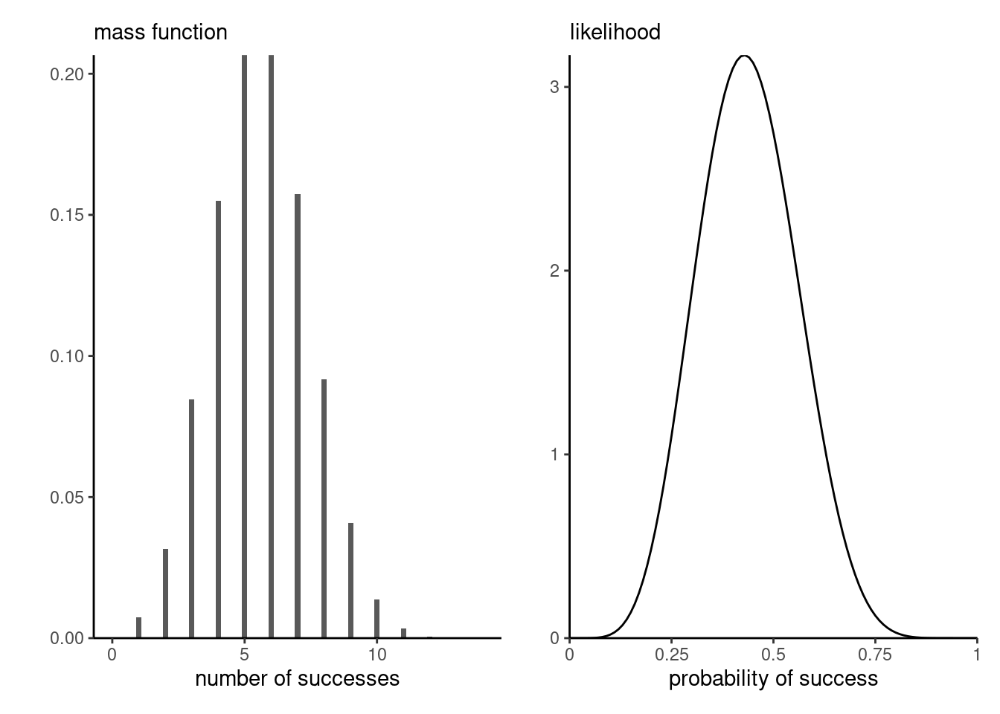

1 Bayesics
The Bayesian paradigm is an inferential framework that is used widespread in data science. Numerical challenges that prevented it’s widespread adoption until the 90’s, when the Markov chain Monte Carlo revolution allowed models estimation.
Bayesian inference, which builds on likelihood-based inference, offers a natural framework for prediction and for uncertainty quantification. The interpretation is more natural than that of classical frequentists methods, and it is more easy to generalized models to complex settings, using notably hierarchical constructions. The main source of controversy is the role of the prior distribution, which allows one to incorporate subject-matter expertise but leads to different inferences being drawn by different practitioners; this subjectivity is not to the taste of many and has been the subject of many controversies.
The Bayesian paradigm includes multiples notions that are not covered in undergraduate introductory courses. The purpose of this chapter is to introduce these concepts and put them in perspective; the reader is assumed to be familiar with basics of likelihood-based inference. We begin with a discussion of the notion of probability, then define priors, posterior distributions, marginal likelihood and posterior predictive distributions. We focus on the interpretation of posterior distributions and explain how to summarize the posterior, leading leading to definitions of high posterior density region, credible intervals, posterior mode for cases where we either have a (correlated) sample from the posterior, or else have access to the whole distribution. Several notions, including sequentiality, prior elicitation and estimation of the marginal likelihood, are mentioned in passing. A brief discussion of Bayesian hypothesis testing (and alternatives) is presented.
1.1 Probability and frequency
In classical (frequentist) parametric statistic, we treat observations \(\boldsymbol{Y}\) as realizations of a distribution whose parameters \(\boldsymbol{\theta}\) are unknown. All of the information about parameters is encoded by the likelihood function.
The interpretation of probability in the classical statistic is in terms of long run frequency, which is why we term this approach frequentist statistic. Think of a fair die: when we state that values \(\{1, \ldots, 6\}\) are equiprobable, we mean that repeatedly tossing the die should result, in large sample, in each outcome being realized roughly \(1/6\) of the time (the symmetry of the object also implies that each facet should be equally likely to lie face up). This interpretation also carries over to confidence intervals: a \((1-\alpha)\) confidence interval either contains the true parameter value or it doesn’t, so the probability level \((1-\alpha)\) is only the long-run proportion of intervals created by the procedure that should contain the true fixed value, not the probability that a single interval contains the true value. This is counter-intuitive to most.
In practice, the true value of the parameter \(\boldsymbol{\theta}\) vector is unknown to the practitioner, thus uncertain: Bayesians would argue that we should treat the latter as a random quantity rather than a fixed constant. Since different people may have different knowledge about these potential values, the prior knowledge is a form of subjective probability. For example, if you play cards, one person may have recorded the previous cards that were played, whereas other may not. They thus assign different probability of certain cards being played. In Bayesian inference, we consider \(\boldsymbol{\theta}\) as random variables to reflect our lack of knowledge about potential values taken. Italian scientist Bruno de Finetti, who is famous for the claim ``Probability does not exist’’, stated in the preface of Finetti (1974):
Probabilistic reasoning — always to be understood as subjective — merely stems from our being uncertain about something. It makes no difference whether the uncertainty relates to an unforseeable future, or to an unnoticed past, or to a past doubtfully reported or forgotten: it may even relate to something more or less knowable (by means of a computation, a logical deduction, etc.) but for which we are not willing or able tho make the effort; and so on […] The only relevant thing is uncertainty — the extent of our knowledge and ignorance. The actual fact of whether or not the events considered are in some sense determined, or known by other people, and so on, is of no consequence.
On page 3, de Finetti continues (Finetti 1974)
only subjective probabilities exist — i.e., the degree of belief in the occurrence of an event attributed by a given person at a given instant and with a given set of information.
1.2 Posterior distribution
We consider a parametric model with parameters \(\boldsymbol{\theta}\) defined on \(\boldsymbol{\Theta} \subseteq \mathbb{R}^p\). In Bayesian learning, we adjoin to the likelihood \(\mathcal{L}(\boldsymbol{\theta}; \boldsymbol{y}) \equiv p(\boldsymbol{y} \mid \boldsymbol{\theta})\) a prior function \(p(\boldsymbol{\theta})\) that reflects the prior knowledge about potential values taken by the \(p\)-dimensional parameter vector, before observing the data \(\boldsymbol{y}\). The prior makes \(\boldsymbol{\theta}\) random and the distribution of the parameter reflects our uncertainty about the true value of the model parameters.
In a Bayesian analysis, observations are random variables but inference is performed conditional on the observed sample values. By Bayes’ theorem, our target is therefore the posterior density \(p(\boldsymbol{\theta} \mid \boldsymbol{y})\), defined as
\[ \underbracket[0.25pt]{p(\boldsymbol{\theta} \mid \boldsymbol{y})}_{\text{posterior}} = \frac{\overbracket[0.25pt]{p(\boldsymbol{y} \mid \boldsymbol{\theta})}^{\text{likelihood}} \times \overbracket[0.25pt]{p(\boldsymbol{\theta})}^{\text{prior}}}{\underbracket[0.25pt]{\int p(\boldsymbol{y} \mid \boldsymbol{\theta}) p(\boldsymbol{\theta}) \mathrm{d} \boldsymbol{\theta}}_{\text{marginal likelihood }p(\boldsymbol{y})}}. \tag{1.1}\]
The posterior \(p(\boldsymbol{\theta} \mid \boldsymbol{y})\) is proportional, as a function of \(\theta,\) to the product of the likelihood and the prior function.
For the posterior to be proper, we need the product of the prior and the likelihood on the right hand side to be integrable as a function of \(\boldsymbol{\theta}\) over the parameter domain \(\boldsymbol{\Theta}\). The integral in the denominator, termed marginal likelihood and denoted \(p(\boldsymbol{y}) = \mathsf{E}_{\boldsymbol{\theta}}\{p(\boldsymbol{y} \mid \boldsymbol{\theta})\}\). The denominator of Equation 1.1 is a normalizing constant, making the posterior a valid density.
If \(\boldsymbol{\theta}\) is low dimensional, numerical integration such as quadrature methods can be used to compute the marginal likelihood.
To fix ideas, we consider next a simple one-parameter model where the marginal likelihood can be computed explicitly.
Example 1.1 (Binomial model with beta prior) Consider a binomial likelihood with probability of success \(p\) and \(n\) trials, \(Y \sim \mathsf{Bin}(n, p)\). If we take a beta prior, \(p \sim \mathsf{Be}(\alpha, \beta)\) and observe \(k\) successes, the posterior is \[\begin{align*} p(\theta \mid y = k) &\propto \binom{n}{k} p^k (1-p)^{n-k} \frac{\Gamma(\alpha + \beta)}{\Gamma(\alpha) \Gamma(\beta)}p^{\alpha-1} (1-p)^{\beta-1} \\&\stackrel{p}{\propto} p^{k+\alpha-1}(1-p)^{n-k+\beta-1} \end{align*}\] and is \[\int_{0}^{1} p^{k+\alpha-1}(1-p)^{n-k+\beta-1}\mathrm{d} p = \frac{\Gamma(k+\alpha)\Gamma(n-k+\beta)}{\Gamma(n+\alpha+\beta)},\] a Beta function. Since we need only to keep track of the terms that are function of the parameter \(p\), we could recognize directly that the posterior distribution is \(\mathsf{Be}(k+\alpha, n-k+\beta)\) and deduce the normalizing constant from there.
If \(Y \sim \mathsf{Bin}(n, p)\), the expected number of success is \(np\) and the expected number of failures \(n(1-p)\) and so the likelihood contribution, relative to the prior, will dominate as the sample size \(n\) grows.
Another way to see this is to track moments (expectation, variance, etc.) The Beta distribution, whose density is \(f(x; \alpha, \beta) \propto x^{\alpha-1} (1-x)^{\beta-1}\), has expectation \(\alpha/(\alpha+\beta)\) and variance \(\alpha\beta/\{(\alpha+\beta)^2(\alpha+\beta+1)\}\). The posterior mean is \[\begin{align*} \mathsf{E}(p \mid y) = w\frac{y}{n} + (1-w) \frac{a}{a+b}, \qquad w = \frac{n}{n+a+b}, \end{align*}\] a weighted average of the maximum likelihood estimator and the prior mean. We can think of the parameter \(\alpha\) (respectively \(\beta\)) as representing the prior number of success (resp. failures).
Figure 1.1 shows three different posterior distributions with different beta priors: the first prior, which favors values closer to 1/2, leads to a more peaked posterior density, contrary to the second which is symmetric, but concentrated toward more extreme values near endpoints of the support. The rightmost panel is truncated: as such, the posterior is zero for any value of \(p\) beyond 1/2 and so the posterior mode may be close to the endpoint of the prior. The influence of such a prior will not necessarily vanish as sample size and should be avoided, unless there are compelling reasons for restricting the domain.
Remark (Proportionality). Any term appearing in the likelihood times prior function that does not depend on parameters can be omitted since they will be absorbed by the normalizing constant. This makes it useful to compute normalizing constants or likelihood ratios.
Remark. An alternative parametrization for the beta distribution sets \(\alpha=\mu \kappa\), \(\beta = (1-\mu)\kappa\) for \(\mu \in (0,1)\) and \(\kappa>0\), so that the model is parametrized directly in terms of mean \(\mu\), with \(\kappa\) capturing the dispersion.
Remark. A density integrates to 1 over the range of possible outcomes, but there is no guarantee that the likelihood function, as a function of \(\boldsymbol{\theta}\), integrates to one over the parameter domain \(\boldsymbol{\Theta}\).
For example, the binomial likelihood with \(n\) trials and \(k\) successes satisfies \[\int_0^1 \binom{n}{k}p^k(1-p)^{n-k} \mathrm{d} p = \frac{1}{n+1}.\]
Moreover, the binomial distribution is discrete (supported on \(0, \ldots, n\)), whereas the likelihood is continuous as a function of the probability of success, as evidenced by Figure 1.2

Proposition 1.1 (Sequentiality and Bayesian updating) The likelihood is invariant to the order of the observations if they are independent Thus, if we consider two blocks of observations \(\boldsymbol{y}_1\) and \(\boldsymbol{y}_2\) \[p(\boldsymbol{\theta} \mid \boldsymbol{y}_1, \boldsymbol{y}_2) = p(\boldsymbol{\theta} \mid \boldsymbol{y}_1) p(\boldsymbol{\theta} \mid \boldsymbol{y}_2),\] so it makes no difference if we treat data all at once or in blocks. More generally, for data exhibiting spatial or serial dependence, it makes sense to consider rather the conditional (sequential) decomposition \[f(\boldsymbol{y}; \boldsymbol{\theta}) = f(\boldsymbol{y}_1; \boldsymbol{\theta}) f(\boldsymbol{y}_2; \boldsymbol{\theta}, \boldsymbol{y}_1) \cdots f(\boldsymbol{y}_n; \boldsymbol{\theta}, \boldsymbol{y}_1, \ldots, \boldsymbol{y}_{n-1})\] where \(f(\boldsymbol{y}_k; \boldsymbol{y}_1, \ldots, \boldsymbol{y}_{k-1})\) denotes the conditional density function given observations \(\boldsymbol{y}_1, \ldots, \boldsymbol{y}_{k-1}\).
By Bayes’ rule, we can consider updating the posterior by adding terms to the likelihood, noting that \[\begin{align*} p(\boldsymbol{\theta} \mid \boldsymbol{y}_1, \boldsymbol{y}_2) \propto p(\boldsymbol{y}_2 \mid \boldsymbol{y}_1, \boldsymbol{\theta}) p(\boldsymbol{\theta} \mid \boldsymbol{y}_1) \end{align*}\] which amounts to treating the posterior \(p(\boldsymbol{\theta} \mid \boldsymbol{y}_1)\) as a prior. If data are exchangeable, the order in which observations are collected and the order of the belief updating is irrelevant to the full posterior. Figure 1.3 shows how the posterior becomes gradually closer to the scaled likelihood as we increase the sample size, and the posterior mode moves towards the true value of the parameter (here 0.3).

Example 1.2 While we can calculate analytically the value of the normalizing constant for the beta-binomial model, we could also for arbitrary priors use numerical integration or Monte Carlo methods in the event the parameter vector \(\boldsymbol{\theta}\) is low-dimensional.
While estimation of the normalizing constant is possible in simple models, the following highlights some challenges that are worth keeping in mind. In a model for discrete data (that is, assigning probability mass to a countable set of outcomes), the terms in the likelihood are probabilities and thus the likelihood becomes smaller as we gather more observations (since we multiply terms between zero or one). The marginal likelihood term becomes smaller and smaller, so it’s reciprocal is big and this can lead to arithmetic underflow.
k <- 6L # number of successes
n <- 14L # number of trials
alpha <- beta <- 1.5 # prior parameters
unnormalized_posterior <- function(p){
p^(k+alpha-1) * (1-p)^(n-k + beta - 1)
}
integrate(f = unnormalized_posterior,
lower = 0,
upper = 1)1.066906e-05 with absolute error < 1e-12# Compare with known constant
beta(k + alpha, n - k + beta)[1] 1.066906e-05# Monte Carlo integration
mean(unnormalized_posterior(runif(1e5)))[1] 1.064067e-05When \(\boldsymbol{\theta}\) is high-dimensional, the marginal likelihood is intractable. This is one of the main challenges of Bayesian statistics and the popularity and applicability has grown drastically with the development and popularity of numerical algorithms, following th publication of Geman and Geman (1984) and Gelfand and Smith (1990). Markov chain Monte Carlo methods circumvent the calculation of the denominator by drawing approximate samples from the posterior.
1.3 Posterior predictive distribution
1.4 Summarizing posterior distributions
Most of the field revolves around the creation of algorithms that either circumvent the calculation of the normalizing constant (notably Monte Carlo and Markov chain Monte Carlo methods) or else provide accurate numerical approximation of the posterior pointwise, including for marginalizing out all but one parameters (integrated nested Laplace approximations, variational inference, etc.)
The target of inference is the whole posterior distribution, from which we can extract any summary of interest. For example, if we consider the beta-binomial model, we can assess the posterior probability \(\Pr(P > c)\) simply by calculating the area under the posterior density until \(c\). In certain settings, however it will be useful to provide moments or other characteristics of the distribution, notably since visualization of a (potentially high-dimensional) object is not easy.
The output of the Bayesian learning problem will be either of:
- a fully characterized distribution
- a numerical approximation to the posterior distribution (pointwise)
- an exact or approximate sample drawn from the posterior distribution
Point estimators are usually in terms of central tendency. We can return the expected value or mean of the posterior, quantiles such as the median or the mode, the value at which the posterior density is highest. These functionals may correspond to potentially different values, as shown in the left-panel of Figure 1.4. For multimodal distributions, the mode is likely the better choice.
If we know the distribution, we can optimize to find the mode or else return the value for the pointwise evaluation on a grid at which the density achieves it’s maximum.

Often, we will also be interested in the marginal posterior distribution of each component \(\theta_j\) in turn (\(j=1, \ldots, p\)). To get these, we carry out additional integration steps, \[p(\theta_j \mid \boldsymbol{y}) = \int p(\boldsymbol{\theta} \mid \boldsymbol{y}) \mathrm{d} \boldsymbol{\theta}_{-j}.\]